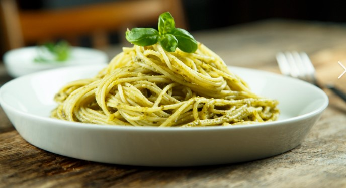

Ricetta della Pasta al Pesto

Istruzioni
Ingredienti
- 200g di pasta
- 50 g di basilico fresco
- 50 g di parmigiano grattugiato
- 30 g di pinoli
- 1 spicchio d'aglio
- 70ml di olio extravergine d'oliva
- sale q.b.
preparazione
- tritare il basilico, pinoli,aglio e parmigiano in un mortaio
- aggiungere lentamente l'olio fino a ottenrer una crema omogenea
- cuocere la pasta in acqua salata
- unire la pasta al pesto e mescolare bene
- aggiungere parmigiano extra e servire
VALORI NUTRIZIONALI
| calorie |
carboidrati |
proteine |
grassi |
| 420 kcal |
65g |
12 g |
15 g |